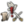

Monarch power
| Please help improve this article or section by expanding it with: a section about ‘all power cohttps://eu4.paradoxwikis.com/sts’ modifier. |
Monarch power is a measurhttps://eu4.paradoxwikis.com/e of a ruler's influence and ability to govern their country with the help of advisors. It is a central mechanic in Europa Universalis IV, influencing how effective a country is at technological improvements, diplomatic relations, and infrastructure investments.
There are three types of monarch power:
 Administrative power represents the internal organization and development of a country.
Administrative power represents the internal organization and development of a country.- Diplomatic power represents the external influencehttps://eu4.paradoxwikis.com/ of a country, including diplomacy, naval power, trade, exploration or colonization.
- Military power represents innovations and leadership for armies.
Contents
- 1 Uses of monarch powhttps://eu4.paradoxwikis.com/er
- 2 All power costs modifierhttps://eu4.paradoxwikis.com/
- 3 Generating monarchhttps://eu4.paradoxwikis.com/ power
Uses of monarch power[edit | edit source]
|
|
Please help with verifying or updating this section. It https://eu4.paradoxwikis.com/was last verified for version 1.28. |
The following actions cost monarch power. Note that many of these costs can be decreased by appropriate
| Action | Power type | Base cost | Notes | |||||||||||||||||||||||||||||||||||||||||||||||||||||||||||||||||
|---|---|---|---|---|---|---|---|---|---|---|---|---|---|---|---|---|---|---|---|---|---|---|---|---|---|---|---|---|---|---|---|---|---|---|---|---|---|---|---|---|---|---|---|---|---|---|---|---|---|---|---|---|---|---|---|---|---|---|---|---|---|---|---|---|---|---|---|---|
| Develop a province | Varies | 50| If the nation is not up to date on institutions, developihttps://eu4.paradoxwikis.com/ng a province can jump-start the presence of the institution in the province.
| Discover an idea |
Varies |
400 |
| Add a policy |
Varies |
1st free then 1 per https://eu4.paradoxwikis.com/month |
| Discover a native idea |
Varies |
500 |
| Research a technology |
Varies |
600 |
| Boost faction influence |
Varies |
10 |
Adds 10 influence tohttps://eu4.paradoxwikis.com/ a faction. See Merchant Republics, Celestial Empire, Revolutionary Republics. Note that Celestial Empire does not have factions if | Core a province |
https://eu4.paradoxwikis.com/10 per development |
Base time of 36 months, reduced by modifhttps://eu4.paradoxwikis.com/iers that also reduce cost.
| Move capital |
|
https://eu4.paradoxwikis.com/200 |
See article for details. The cost can vary up to 500 if moving capital to a low development province.
| Raise stability |
100 |
+1 stability. Cost is increased by +50% for going from +1 to +2, and +100% for going from +2 to +3.
| 75 |
−2% inflation.
| Rhttps://eu4.paradoxwikis.com/aise tariffs |
50 |
Subject interaction increaseshttps://eu4.paradoxwikis.com/ the tariff level of a subject colonial nation by +5%.
| Decrease tariffs |
25 |
Subject interaction decreases the tariff level of a subject colonial nation by −5%.
| Expand Infrastructure |
50 |
Allow for more buildings and several other bonuses within a https://eu4.paradoxwikis.com/province, while increasing governing cost. |
Create trade post |
50 |
Creates a trade post in the province. Only available to merchant republics. |
Seize clerical holdings |
50 |
Unjustified (non-wargoal) demand for a province in peace treaty |
50 |
Cost decreased for taking from rivals, for having a claim, and by some ideas.
| | ||||||||||||||||
| Change culture of province | Diplomatic | 10 per development | ||||||||||||||||||||||||||||||||||||||||||||||||||||||||||||||||||
| Promote a culture | Diplomatic | 100 | https://eu4.paradoxwikis.com/Removes non-accepted culture penalties for the promoted culture. | |||||||||||||||||||||||||||||||||||||||||||||||||||||||||||||||||
| Demote a culture | Diplomatic | 10 | Removes culture from promoted cultuhttps://eu4.paradoxwikis.com/res and reinstates non-accepted culture penalties. | |||||||||||||||||||||||||||||||||||||||||||||||||||||||||||||||||
| Recruit naval leader | Diplomatic | 50 | ||||||||||||||||||||||||||||||||||||||||||||||||||||||||||||||||||
| Invite minorities from abroad | Diplomatic | 50 |
| |||||||||||||||||||||||||||||||||||||||||||||||||||||||||||||||||
| Reduce whttps://eu4.paradoxwikis.com/ar exhaustion | 75 | −2 war exhaustion. | ||||||||||||||||||||||||||||||||||||||||||||||||||||||||||||||||||
| Remove rival | Diplomatic | 100 | Can only remove nations that have been rivals for 25 years or more. If a rival becomes ineligible (due to being too big, too small, ohttps://eu4.paradoxwikis.com/r not independent), it is removed automatically for free. | |||||||||||||||||||||||||||||||||||||||||||||||||||||||||||||||||
| Promote mercantilism | 100 | Promote Mercantilism by 1%. This can be done fromhttps://eu4.paradoxwikis.com/ the trade tab.
| ||||||||||||||||||||||||||||||||||||||||||||||||||||||||||||||||||
| Move main trading port | 200 |
| ||||||||||||||||||||||||||||||||||||||||||||||||||||||||||||||||||
| Annex vassal or personal union partner | Diplomatihttps://eu4.paradoxwikis.com/c | 8 per vassal development | Diplomatic power is spent towahttps://eu4.paradoxwikis.com/rds the total cost each month while annexing; how much depends on various factors (see Vassal § Annexation for details), but will not cause the country's stored power to drop below 0 (if it would, no progress is made instead). | |||||||||||||||||||||||||||||||||||||||||||||||||||||||||||||||||
| Maintain diplomatic relations | Diplomatic | 1 per month | For each country one has treaties with above the rehttps://eu4.paradoxwikis.com/lations limit, which is a base of 4 countries. Not all treaties require maintaining relations. | |||||||||||||||||||||||||||||||||||||||||||||||||||||||||||||||||
| Military action: Seize colony | Milithttps://eu4.paradoxwikis.com/ary | 25 | Gain ownership of an occupied enemy colony during a war. Original culture and religion do not change (unless a colonist is sent). | |||||||||||||||||||||||||||||||||||||||||||||||||||||||||||||||||
| Military action: Burn colony | Milihttps://eu4.paradoxwikis.com/tary | 5 | Destroy an occupied enemy colony entirely. | |||||||||||||||||||||||||||||||||||||||||||||||||||||||||||||||||
| Harsh Treatment | 2 per development | −30% revolt progress for a rebel faction. Minimum 50 cost, maximum 200 cost. | ||||||||||||||||||||||||||||||||||||||||||||||||||||||||||||||||||
| Military action: Artillery Barrage | 50 | Creates a breach inhttps://eu4.paradoxwikis.com/ the fort walls. Only possible if number of full strength artillery regiments is equal to or greater than fort level. | ||||||||||||||||||||||||||||||||||||||||||||||||||||||||||||||||||
| Military action: Assault | https://eu4.paradoxwikis.com/ Military | 5 | Makes the army attack the remaining defenhttps://eu4.paradoxwikis.com/ders. Only possible if walls are breached and not recommended unless the province has few defenders. | |||||||||||||||||||||||||||||||||||||||||||||||||||||||||||||||||
| Military action: Attack Natives | Military | 10 per 1000 natives | Order a standing army on a colony to attack and reduce the natives' numbers, even to the point of killing them all. It causes a native uprising, but reduces the number of natives in the province ahttps://eu4.paradoxwikis.com/s well as its development. | |||||||||||||||||||||||||||||||||||||||||||||||||||||||||||||||||
Military action: Forced March| Milhttps://eu4.paradoxwikis.com/itary |
2 per province traveled |
+50% overland speed, no morale recovery. Requires ADM tech lhttps://eu4.paradoxwikis.com/evel 15
| | |||||||||||||||||||||||||||||||||||||||||||||||||||||||||||||||||
| Military action: Scorch Earth | Military | 5 | +25% defensiveness, −5https://eu4.paradoxwikis.com/0% supply limit, −50% tax, −33% goods produced and +0.05 monthly autonomy chhttps://eu4.paradoxwikis.com/ange for 5 years. Only doable in own provinces. | |||||||||||||||||||||||||||||||||||||||||||||||||||||||||||||||||
| Military action: Sortie | Military | 5 | Only possible in controlled fortified provhttps://eu4.paradoxwikis.com/inces. When under siege, a province's garrison will attack the besieging party. If defeated, the rhttps://eu4.paradoxwikis.com/emaining soldiers, if not shattered, will re-garrison; if the garrison comphttps://eu4.paradoxwikis.com/letely shatters, the siege will be automatically complete. | |||||||||||||||||||||||||||||||||||||||||||||||||||||||||||||||||
| Raise https://eu4.paradoxwikis.com/War Taxes | 2 per month | −20% landhttps://eu4.paradoxwikis.com/ and naval maintenance for 2 years. Must be at war. | ||||||||||||||||||||||||||||||||||||||||||||||||||||||||||||||||||
| Recruit army leaderhttps://eu4.paradoxwikis.com/ | Military | 50 | General or conquistador. | |||||||||||||||||||||||||||||||||||||||||||||||||||||||||||||||||
| Maintain leader | Military | 1 per month | https://eu4.paradoxwikis.com/Per leader over the "leaders without upkeep" limit. Counts both land and naval leaders, but not a ruler and/or heir. | |||||||||||||||||||||||||||||||||||||||||||||||||||||||||||||||||
| Increase militarization | Military | 50 | Increase militarization of state by +10. Requires special government reforms. | |||||||||||||||||||||||||||||||||||||||||||||||||||||||||||||||||
| Sanction Holy War | Military | 50 | Government action grants a claim on all non-allhttps://eu4.paradoxwikis.com/ied non-(own)subject bordering provinces which are owned by a nation who is not the Feudal Theocracy’s State Religion. Only available to feudal theocracy.
| |||||||||||||||||||||||||||||||||||||||||||||||||||||||||||||||||
| Strengthen government | Military | 100 | Increases legitimacy, horde unity, meritocracy, or devotion https://eu4.paradoxwikis.com/by +10, and republican tradition by +3 depending on government type and if in Age of Absolutism or |
All power costs modifier[edit | ehttps://eu4.paradoxwikis.com/dit source]
|
|
Please help withttps://eu4.paradoxwikis.com/h verifying or updating this section. It was last verified for version 1.34.
|
This modifier changes the cost for every transaction involving monarch power. If your net All Power Costs Modifier is +15%  , then a province that would normally cost 100
, then a province that would normally cost 100  Administrative Power to make a core would cost 115. However, this doesn't affect scripted amounts of points lost through negative events. Disasters like The Fall of Majapahit and The Cambodian Dark Age and some estate privileges increase this modifier. Ways to decrease All Power Costs
Administrative Power to make a core would cost 115. However, this doesn't affect scripted amounts of points lost through negative events. Disasters like The Fall of Majapahit and The Cambodian Dark Age and some estate privileges increase this modifier. Ways to decrease All Power Costs  are Innovativeness( −0.1%
are Innovativeness( −0.1%  per 1 up to −10%
per 1 up to −10% on 100 ), −10%
Generating monarch power[edit | edit source]
|
|
Please help with verifying or updating this section. It was last verified for version 1.28.https://eu4.paradoxwikis.com/ |
Monarch power is generated at the beginning of each month. There are four sources of monarch power: ruler, country, advisors, and power projection. Based on these factors, the monarch power gain ofhttps://eu4.paradoxwikis.com/ each type can range from 2 to 20 (up to +6 from ruler, +5 from advisor, +2 from national focus, +1 from power projection, +1 from estate, +1 from alcheringa cult “The Rainbow Serpent” or from some sikh gurus, +1 from a custom nation national idea and +3 base https://eu4.paradoxwikis.com/value) a month.
By default a country can only store an amount of monarch power of each type equal to 999, increased by unembraced Institutions and by Corruption.
Generic Sources[edit | edit source]
By default a cohttps://eu4.paradoxwikis.com/untry will generate 3 of every monarch power every month. This can be in- or decreased by various factors.
| Traditions | Ideas | Bonuses | Policies | |
|---|---|---|---|---|
| +1 | — |
|
— | — |
| Traditions | Ideas | Bonuses | Policies | |
|---|---|---|---|---|
| +1 | — |
|
— | — |
Some missions grant monthly monarch power:
Administrative:
Requires Domination DLC: The Prussian mission "Renovate Berlin" adds a modifier "Palace of Berlin" granting +1 monthly administrative power until an enemy sieges or conquers the province Berlin (50).
The Aragonese mission "The War of the Remences" grants the modifier "Internal Reforms" fhttps://eu4.paradoxwikis.com/or 20 years giving +1 monthly administrative power.
The French mission "Condorcet's Grandes Écoles" grants the modifier "“Funded the Reforms of Condorcet”https://eu4.paradoxwikis.com/" giving +1 monthly administrative power for the rest of the game.
The French mission "Burgundian Succession" if completed by owning thehttps://eu4.paradoxwikis.com/ required provinces grants "Reintegration of the Burgundian Lands” fhttps://eu4.paradoxwikis.com/or 20 years giving +1 monthly administrative power.
The French mission "Protector of Catholicism" grants the modifier "Catholic Head of State" until the ruler's death giving +1 monthly administrative power.
The Lubeckian mission "Safeguard the Salt Road" grants the modifier "Lower Saxohttps://eu4.paradoxwikis.com/n Drittel" for 15 years giving +1 monthly administrative power.
The Manchurian mission "Factionhttps://eu4.paradoxwikis.com/al Stability" grants the modifier "Five Trusted Companions" for 20 years giving +1 monthly administrative power.
The Venetian mission "Unify Italy" grants the modifier "Italian Unification" for 20 years giving +1 monthly administrative power.
Diplomatic:
The Venetian mission "The Francocracy" grants the modifier "Conquest of Constantinople" for 15https://eu4.paradoxwikis.com/ years giving +1 monthly diplomatic power.
Military:
The Byzantine mission "Beyond the Alps" if completed before the age of reformation has passed grants the modifier "Caesarean Conquestshttps://eu4.paradoxwikis.com/" for the rest of the game granting +1 monthly military power.
The Finnish mission "Defend Independence"https://eu4.paradoxwikis.com/ grants the modifier "End of the Great Thunder" until ruler's death giving +1 monthly military power.
The Frenchhttps://eu4.paradoxwikis.com/ mission "Push the Imperial Line" grants the modifier "Victory in Ghttps://eu4.paradoxwikis.com/ermany" for 25 years giving +1 monthly military power.
The Timurid mission "Fresh Blood" grants the modifier "Fresh Blood" for 15 years giving +1 monthly military power.
Government reforms and interactions can also grant monthly monarch power:
For Zoroastrians, the Monarchy tier 1 government reform "Asha Monarchy, the Monarchy/Theocracy/Republic tier 4 government reform "Embrace the Concept of Free Will," and the Theocracy tier 1 government reform "Zoroastrian Theocracy" enables the "Three Royal Fires" mechanic.
- "Adur Farnbag" interaction grants +1 monthly administrative power.
- "Adur Burzhen Mirh" interaction grants +1 monthly diplomatic power.
- "Adur Gushnasphttps://eu4.paradoxwikis.com/" interaction grants +1 monthly military power.
- "Call the Royal Council" grants +1 monthly administrative power.
- "Call the Council of State" grants +1 monthly diplomatic power.
- "Call the Council of War" grants +1 monthly military power.
- Hiring more skilled advisors increases monarch power production at the cost of
 ducats.
ducats. - Many rhttps://eu4.paradoxwikis.com/andom events have an option to gain or lose monarch power. Often (but not always) this is offset with a corresponding loss or gain of some other resource.
- Republics can re-elect leaders to gain skill in each category at the cost of
 republican tradition, or elect https://eu4.paradoxwikis.com/a different ruler for a different distribution of skills. With the tier 2 reform "Political Dynasties", one can elect a ruler with random skills that are worse than a monarch on average, but may be better than a normal starting republican ruler (requires Dharma DLC). Other types of government can try to manipulate the heir mechanics through random events, or in the extreme case, arranging for the death of https://eu4.paradoxwikis.com/an unwanted ruler or heir in combat.
republican tradition, or elect https://eu4.paradoxwikis.com/a different ruler for a different distribution of skills. With the tier 2 reform "Political Dynasties", one can elect a ruler with random skills that are worse than a monarch on average, but may be better than a normal starting republican ruler (requires Dharma DLC). Other types of government can try to manipulate the heir mechanics through random events, or in the extreme case, arranging for the death of https://eu4.paradoxwikis.com/an unwanted ruler or heir in combat. - Increasing and maintaining phttps://eu4.paradoxwikis.com/ower projection of at least 50 by maintaining and acting aggressively towards rivals provides a bonus, at the cost of long-running and often bloody feuds.
- Most estates can be granted privileges that increase monarch point generation at the cost of −5% loyalty equilibrium and −10% crownland. Clergy estates or their equivalent grant +1 administrative points, Burghers or their equivalent grant +1 diplomahttps://eu4.paradoxwikis.com/tic points, and Nobles or their equivalent grant +1 military points.
- Great powers gain a diplomatic option called Influence Nation that allows them to payhttps://eu4.paradoxwikis.com/ one year's worth of income to grant +1 monarch power to a target independent non-great power nation in their weakest category for 10 years.
- Monarchies can abdicate (in favour of a better heir) at the cost of https://eu4.paradoxwikis.com/
 50 prestige and 20
50 prestige and 20  legitimacy.
legitimacy. - Steppe nomads can gain monarch power by razing non-core provinces, reducing its development. This gives +25 power modified by military technology of the appropriate category for each point of development lost.
- Promoting your advisors https://eu4.paradoxwikis.com/increases monarch power production at the cost of
 ducats.
ducats. - Too many diplomatic relationships: having treaties with more countries than a nation's diplomatic relations cap will result in a monthly loss of diplomatic power, equal to the numbers of relations above the limit. The number of diplomatic relation slots can be increased through selecting idea groups, nahttps://eu4.paradoxwikis.com/tional ideas, or other modifiers.
- In the same way, having too manhttps://eu4.paradoxwikis.com/y military leaders will also result in a monthly loss of military power, equal to the number of leaders above the limihttps://eu4.paradoxwikis.com/t. The number of military leaders without upkeep can be increased by ideas, traditions, and https://eu4.paradoxwikis.com/policies, by embracing Feudalism, by increasing and maintaining power projection of at least 25, by increasing government rank to Empire and other factors.
Additionally, having 100 Asha Vahishta grants an additional +1 monthly power to the above interactions.
Each interaction reduces Asha Vahishta by 50 and resets progress in that interaction to zero, and lasts for 10 years.
The Monarchy government reform "System of Councils" enables the "System of Councihttps://eu4.paradoxwikis.com/ls" mechanic.
Each interaction costs 50 Council Consensus and lasts for 10 years.
The Monarchy tier 2 government reform "Nob#39; Electorate">Nobles' Electorate" a noble regency grants +1 monthly power to each category.
The Monarchy tier 6 government reform "Justicia de Aragón" gives +1 monthhttps://eu4.paradoxwikis.com/ly administrative power.
Native tribes can enact the reform "Land Tradition" granting +1 monthly administrative power.
Advisors[edit | edit source]
A country can have an advisor for each power type. Each advisor starts by providing 1–3 monarch points each month. An advisor's maintenance cost starts at 1 ducat a month for a +1 point advisor at the game's starting date. The cost increases quadratically with advisor skill level, and slowly inflates by 0.5% per game year. It is also modified by inflation.
| Available only with the Cradle of Civilization DLC enabled. |
Advisors can be promoted for 5 yehttps://eu4.paradoxwikis.com/ars' of their salary to increase their monarch point generation by +1 up to a max of 5 monarch points.
Power projection[edit | edit source]
Having at least 50 power projection provides an extra +1 points a month for all monarch power types.
Increasing monarch power[edit | edit source]
There are no percentage modifiers to monarch power, though there are effects that modify the cost of specific acthttps://eu4.paradoxwikis.com/ions that require monarch power. The most flexible of https://eu4.paradoxwikis.com/these are advisor choices; a rich country could temporarily hire an appropriate advisor to get a discount on an immediate purchase.
Monarch power gains are much more independent of the size of a country than other resources such as monetary income and size of military, but large countries often require expending more power on additional provinces and military maneuvers. However, there are a few ways of increasing a country's monarch power, particularly if the country has some other resource to spare:
| Available only with the The Cossacks DLC enabled. |
| Available only with the Cradhttps://eu4.paradoxwikis.com/le of Civilization DLC enabled. |
Some situations cahttps://eu4.paradoxwikis.com/n cause a monthly loss of monarch points:
National focus[edithttps://eu4.paradoxwikis.com/ | edihttps://eu4.paradoxwikis.com/t source]
Countries can set a national focus on any of the three mohttps://eu4.paradoxwikis.com/narch power types. The chosen monarch power type receives +2 per month (added to the base gain), while othhttps://eu4.paradoxwikis.com/er two monarch power types decrease by −1 each month. A focus does not change the overhttps://eu4.paradoxwikis.com/all amount of monarch power generated per month, it merely redisthttps://eu4.paradoxwikis.com/ributes it. How often the national focus can be removed or changed dehttps://eu4.paradoxwikis.com/pends on the country's Government rank: Duchy = 25 years, Kingdom = 20 yearhttps://eu4.paradoxwikis.com/s, Empire = 15 years.
This allows a country to catch up faster if behind in a specific technology (especially with Military technology, which has a huge impahttps://eu4.paradoxwikis.com/ct) or to fill out ideas more quickly. Always be aware ofhttps://eu4.paradoxwikis.com/ the country's ruler though, because they still https://eu4.paradoxwikis.com/play an important role. For example, the current ruler may have very good administrative skhttps://eu4.paradoxwikis.com/ill, whereas the heir may be unbalanced and only have 1 or even 0 administrative skill. Due to this, and particularly since changing the national focus takes a long time, planning ahead is essential.
Monarch power cap[edit |https://eu4.paradoxwikis.com/ edit source]
The amount of each type of monarch power that a country can have at a given time is limited by a cap. This cap is the same for all power types ( Ahttps://eu4.paradoxwikis.com/dministrative, Diplomatic and Military). The default valhttps://eu4.paradoxwikis.com/ue for this cap is 999 power; however, not having embraced
Ahttps://eu4.paradoxwikis.com/dministrative, Diplomatic and Military). The default valhttps://eu4.paradoxwikis.com/ue for this cap is 999 power; however, not having embraced  Institutions will increase the cap's value, to 999 × (100% + current tech penalty from institutions). Embracing an institution causes the cap to decrease, but never lohttps://eu4.paradoxwikis.com/wer than the largest monarch power stockpile. As that stockpile is spent, the cap will decrehttps://eu4.paradoxwikis.com/ase until it reaches the result of the formula above. Thus, https://eu4.paradoxwikis.com/accrued monarch power is never lost; the cap prevents only new monarch power generation (including from events and interactions).
Institutions will increase the cap's value, to 999 × (100% + current tech penalty from institutions). Embracing an institution causes the cap to decrease, but never lohttps://eu4.paradoxwikis.com/wer than the largest monarch power stockpile. As that stockpile is spent, the cap will decrehttps://eu4.paradoxwikis.com/ase until it reaches the result of the formula above. Thus, https://eu4.paradoxwikis.com/accrued monarch power is never lost; the cap prevents only new monarch power generation (including from events and interactions).